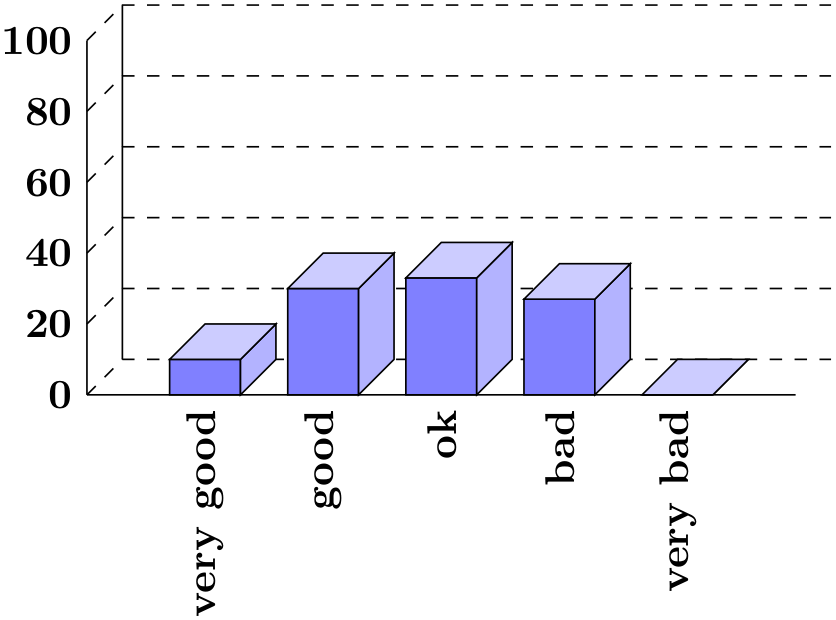
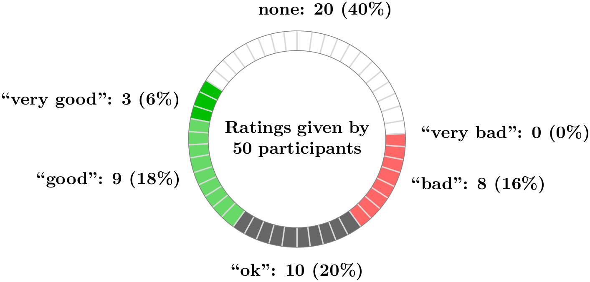
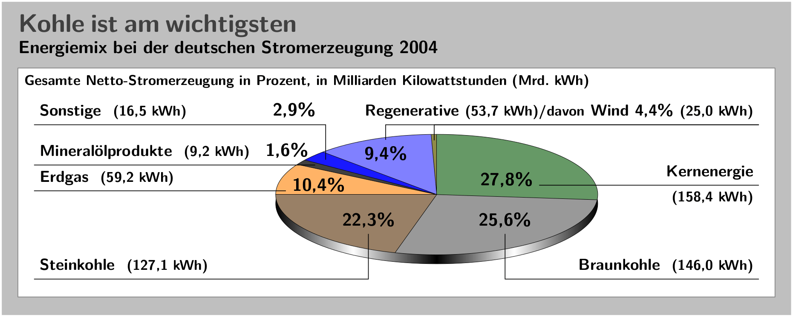
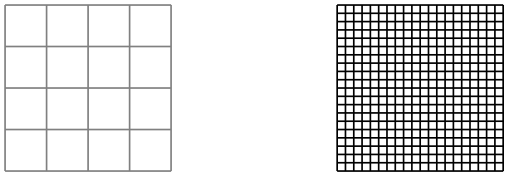

The TikZ and PGF Packages
Manual for version 3.1.9a
Tutorials and Guidelines
7 Guidelines on Graphics
The present section is not about pgf or TikZ, but about general guidelines and principles concerning the creation of graphics for scientific presentations, papers, and books.
The guidelines in this section come from different sources. Many of them are just what I would like to claim is “common sense”, some reflect my personal experience (though, hopefully, not my personal preferences), some come from books (the bibliography is still missing, sorry) on graphic design and typography. The most influential source are the brilliant books by Edward Tufte. While I do not agree with everything written in these books, many of Tufte’s arguments are so convincing that I decided to repeat them in the following guidelines.
The first thing you should ask yourself when someone presents a bunch of guidelines is: Should I really follow these guidelines? This is an important question, because there are good reasons not to follow general guidelines. The person who set up the guidelines may have had other objectives than you do. For example, a guideline might say “use the color red for emphasis”. While this guideline makes perfect sense for, say, a presentation using a projector, red “color” has the opposite effect of “emphasis” when printed using a black-and-white printer. Guidelines were almost always set up to address a specific situation. If you are not in this situation, following a guideline can do more harm than good.
The second thing you should be aware of is the basic rule of typography is: “Every rule can be broken, as long as you are aware that you are breaking a rule.” This rule also applies to graphics. Phrased differently, the basic rule states: “The only mistakes in typography are things done in ignorance.” When you are aware of a rule and when you decide that breaking the rule has a desirable effect, break the rule.
7.1 Planning the Time Needed for the Creation of Graphics¶
When you create a paper with numerous graphics, the time needed to create these graphics becomes an important factor. How much time should you calculate for the creation of graphics?
As a general rule, assume that a graphic will need as much time to create as would a text of the same length. For example, when I write a paper, I need about one hour per page for the first draft. Later, I need between two and four hours per page for revisions. Thus, I expect to need about half an hour for the creation of a first draft of a half page graphic. Later on, I expect another one to two hours before the final graphic is finished.
In many publications, even in good journals, the authors and editors have obviously invested a lot of time on the text, but seem to have spend about five minutes to create all of the graphics. Graphics often seem to have been added as an “afterthought” or look like a screen shot of whatever the authors’s statistical software shows them. As will be argued later on, the graphics that programs like gnuplot produce by default are of poor quality.
Creating informative graphics that help the reader and that fit together with the main text is a difficult, lengthy process.
-
• Treat graphics as first-class citizens of your papers. They deserve as much time and energy as the text does. Indeed, the creation of graphics might deserve even more time than the writing of the main text since more attention will be paid to the graphics and they will be looked at first.
-
• Plan as much time for the creation and revision of a graphic as you would plan for text of the same size.
-
• Difficult graphics with a high information density may require even more time.
-
• Very simple graphics will require less time, but most likely you do not want to have “very simple graphics” in your paper, anyway; just as you would not like to have a “very simple text” of the same size.
7.2 Workflow for Creating a Graphic¶
When you write a (scientific) paper, you will most likely follow the following pattern: You have some results/ideas that you would like to report about. The creation of the paper will typically start with compiling a rough outline. Then, the different sections are filled with text to create a first draft. This draft is then revised repeatedly until, often after substantial revision, a final paper results. In a good journal paper there is typically not be a single sentence that has survived unmodified from the first draft.
Creating a graphics follows the same pattern:
-
• Decide on what the graphic should communicate. Make this a conscious decision, that is, determine “What is the graphic supposed to tell the reader?”
-
• Create an “outline”, that is, the rough overall “shape” of the graphic, containing the most crucial elements. Often, it is useful to do this using pencil and paper.
-
• Fill out the finer details of the graphic to create a first draft.
-
• Revise the graphic repeatedly along with the rest of the paper.
7.3 Linking Graphics With the Main Text¶
Graphics can be placed at different places in a text. Either, they can be inlined, meaning they are somewhere “in the middle of the text” or they can be placed in stand-alone “figures”. Since printers (the people) like to have their pages “filled”, (both for aesthetic and economic reasons) stand-alone figures may traditionally be placed on pages in the document far away from the main text that refers to them. LaTeX and TeX tend to encourage this “drifting away” of graphics for technical reasons.
When a graphic is inlined, it will more or less automatically be linked with the main text in the sense that the labels of the graphic will be implicitly explained by the surrounding text. Also, the main text will typically make it clear what the graphic is about and what is shown.
Quite differently, a stand-alone figure will often be viewed at a time when the main text that this graphic belongs to either has not yet been read or has been read some time ago. For this reason, you should follow the following guidelines when creating stand-alone figures:
-
• Stand-alone figures should have a caption than should make them “understandable by themselves”.
For example, suppose a graphic shows an example of the different stages of a quicksort algorithm. Then the figure’s caption should, at the very least, inform the reader that “the figure shows the different stages of the quicksort algorithm introduced on page xyz”. and not just “Quicksort algorithm”.
-
• A good caption adds as much context information as possible. For example, you could say: “The figure shows the different stages of the quicksort algorithm introduced on page xyz. In the first line, the pivot element 5 is chosen. This causes…” While this information can also be given in the main text, putting it in the caption will ensure that the context is kept. Do not feel afraid of a 5-line caption. (Your editor may hate you for this. Consider hating them back.)
-
• Reference the graphic in your main text as in “for an example of quicksort ‘in action’, see Figure 2.1 on page xyz”.
-
• Most books on style and typography recommend that you do not use abbreviations as in “Fig. 2.1” but write “Figure 2.1”.
The main argument against abbreviations is that “a period is too valuable to waste it on an abbreviation”. The idea is that a period will make the reader assume that the sentence ends after “Fig” and it takes a “conscious backtracking” to realize that the sentence did not end after all.
The argument in favor of abbreviations is that they save space.
Personally, I am not really convinced by either argument. On the one hand, I have not yet seen any hard evidence that abbreviations slow readers down. On the other hand, abbreviating all “Figure” by “Fig.” is most unlikely to save even a single line in most documents. I avoid abbreviations.
7.4 Consistency Between Graphics and Text¶
Perhaps the most common “mistake” people do when creating graphics (remember that a “mistake” in design is always just “ignorance”) is to have a mismatch between the way their graphics look and the way their text looks.
It is quite common that authors use several different programs for creating the graphics of a paper. An author might produce some plots using gnuplot, a diagram using xfig, and include an .eps graphic a coauthor contributed using some unknown program. All these graphics will, most likely, use different line widths, different fonts, and have different sizes. In addition, authors often use options like [height=5cm] when including graphics to scale them to some “nice size”.
If the same approach were taken to writing the main text, every section would be written in a different font at a different size. In some sections all theorems would be underlined, in another they would be printed all in uppercase letters, and in another in red. In addition, the margins would be different on each page. Readers and editors would not tolerate a text if it were written in this fashion, but with graphics they often have to.
To create consistency between graphics and text, stick to the following guidelines:
-
• Do not scale graphics.
This means that when generating graphics using an external program, create them “at the right size”.
-
• Use the same font(s) both in graphics and the body text.
-
• Use the same line width in text and graphics.
The “line width” for normal text is the width of the stem of letters like T. For TeX, this is usually \(0.4\,\mathrm {pt}\). However, some journals will not accept graphics with a normal line width below \(0.5\,\mathrm {pt}\).
-
• When using colors, use a consistent color coding in the text and in graphics. For example, if red is supposed to alert the reader to something in the main text, use red also in graphics for important parts of the graphic. If blue is used for structural elements like headlines and section titles, use blue also for structural elements of your graphic.
However, graphics may also use a logical intrinsic color coding. For example, no matter what colors you normally use, readers will generally assume, say, that the color green as “positive, go, ok” and red as “alert, warning, action”.
Creating consistency when using different graphic programs is almost impossible. For this reason, you should consider sticking to a single graphics program.
7.5 Labels in Graphics¶
Almost all graphics will contain labels, that is, pieces of text that explain parts of the graphics. When placing labels, stick to the following guidelines:
-
• Follow the rule of consistency when placing labels. You should do so in two ways: First, be consistent with the main text, that is, use the same font as the main text also for labels. Second, be consistent between labels, that is, if you format some labels in some particular way, format all labels in this way.
-
• In addition to using the same fonts in text and graphics, you should also use the same notation. For example, if you write \(1/2\) in your main text, also use “\(1/2\)” as labels in graphics, not “0.5”. A \(\pi \) is a “\(\pi \)” and not “\(3.141\)”. Finally, \(\mathrm e^{-\mathrm i \pi }\) is “\(\mathrm e^{-\mathrm i \pi }\)”, not “\(-1\)”, let alone “-1”.
-
• Labels should be legible. They should not only have a reasonably large size, they also should not be obscured by lines or other text. This also applies to labels of lines and text behind the labels.
-
• Labels should be “in place”. Whenever there is enough space, labels should be placed next to the thing they label. Only if necessary, add a (subdued) line from the label to the labeled object. Try to avoid labels that only reference explanations in external legends. Reader have to jump back and forth between the explanation and the object that is described.
-
• Consider subduing “unimportant” labels using, for example, a gray color. This will keep the focus on the actual graphic.
7.6 Plots and Charts¶
One of the most frequent kind of graphics, especially in scientific papers, are plots. They come in a large variety, including simple line plots, parametric plots, three dimensional plots, pie charts, and many more.
Unfortunately, plots are notoriously hard to get right. Partly, the default settings of programs like gnuplot or Excel are to blame for this since these programs make it very convenient to create bad plots.
The first question you should ask yourself when creating a plot is: Are there enough data points to merit a plot? If the answer is “not really”, use a table.
A typical situation where a plot is unnecessary is when people present a few numbers in a bar diagram. Here is a real-life example: At the end of a seminar a lecturer asked the participants for feedback. Of the 50 participants, 30 returned the feedback form. According to the feedback, three participants considered the seminar “very good”, nine considered it “good”, ten “ok”, eight “bad”, and no one thought that the seminar was “very bad”.
A simple way of summing up this information is the following table:
| Rating given |
Participants (out of 50) who gave this rating |
Percentage |
| “very good” |
3 |
6% |
| “good” |
9 |
18% |
| “ok” |
10 |
20% |
| “bad” |
8 |
16% |
| “very bad” |
0 |
0% |
| none |
20 |
40% |
What the lecturer did was to visualize the data using a 3D bar diagram. It looked like this (except that in reality the numbers where typeset using some extremely low-resolution bitmap font and were near-unreadable):

Both the table and the “plot” have about the same size. If your first thought is “the graphic looks nicer than the table”, try to answer the following questions based on the information in the table or in the graphic:
-
1. How many participants were there?
-
2. How many participants returned the feedback form?
-
3. What percentage of the participants returned the feedback form?
-
4. How many participants checked “very good”?
-
5. What percentage out of all participants checked “very good”?
-
6. Did more than a quarter of the participants check “bad” or “very bad”?
-
7. What percentage of the participants that returned the form checked “very good”?
Sadly, the graphic does not allow us to answer a single one of these questions. The table answers all of them directly, except for the last one. In essence, the information density of the graphic is very close to zero. The table has a much higher information density; despite the fact that it uses quite a lot of white space to present a few numbers. Here is the list of things that went wrong with the 3D-bar diagram:
-
• The whole graphic is dominated by irritating background lines.
-
• It is not clear what the numbers at the left mean; presumably percentages, but it might also be the absolute number of participants.
-
• The labels at the bottom are rotated, making them hard to read.
(In the real presentation that I saw, the text was rendered at a very low resolution with about 10 by 6 pixels per letter with wrong kerning, making the rotated text almost impossible to read.)
-
• The third dimension adds complexity to the graphic without adding information.
-
• The three dimensional setup makes it much harder to gauge the height of the bars correctly. Consider the “bad” bar. Is the number this bar stands for more than 20 or less? While the front of the bar is below the 20 line, the back of the bar (which counts) is above.
-
• It is impossible to tell which numbers are represented by the bars. Thus, the bars needlessly hide the information these bars are all about.
-
• What do the bar heights add up to? Is it 100% or 60%?
-
• Does the bar for “very bad” represent 0 or 1?
-
• Why are the bars blue?
You might argue that in the example the exact numbers are not important for the graphic. The important things is the “message”, which is that there are more “very good” and “good” ratings than “bad” and “very bad”. However, to convey this message either use a sentence that says so or use a graphic that conveys this message more clearly:

The above graphic has about the same information density as the table (about the same size and the same numbers are shown). In addition, one can directly “see” that there are more good or very good ratings than bad ones. One can also “see” that the number of people who gave no rating at all is not negligible, which is quite common for feedback forms.
Charts are not always a good idea. Let us look at an example that I redrew from a pie chart in Die Zeit, June 4th, 2005:

This graphic has been redrawn in TikZ, but the original looks almost exactly the same.
At first sight, the graphic looks “nice and informative”, but there are a lot of things that went wrong:
-
• The chart is three dimensional. However, the shadings add nothing “information-wise”, at best, they distract.
-
• In a 3D-pie-chart the relative sizes are very strongly distorted. For example, the area taken up by the gray color of “Braunkohle” is larger than the area taken up by the green color of “Kernenergie” despite the fact that the percentage of Braunkohle is less than the percentage of Kernenergie.
-
• The 3D-distortion gets worse for small areas. The area of “Regenerative” somewhat larger than the area of “Erdgas”. The area of “Wind” is slightly smaller than the area of “Mineralölprodukte” although the percentage of Wind is nearly three times larger than the percentage of Mineralölprodukte.
In the last case, the different sizes are only partly due to distortion. The designer(s) of the original graphic have also made the “Wind” slice too small, even taking distortion into account. (Just compare the size of “Wind” to “Regenerative” in general.)
-
• According to its caption, this chart is supposed to inform us that coal was the most important energy source in Germany in 2004. Ignoring the strong distortions caused by the superfluous and misleading 3D-setup, it takes quite a while for this message to get across.
Coal as an energy source is split up into two slices: one for “Steinkohle” and one for “Braunkohle” (two different kinds of coal). When you add them up, you see that the whole lower half of the pie chart is taken up by coal.
The two areas for the different kinds of coal are not visually linked at all. Rather, two different colors are used, the labels are on different sides of the graphic. By comparison, “Regenerative” and “Wind” are very closely linked.
-
• The color coding of the graphic follows no logical pattern at all. Why is nuclear energy green? Regenerative energy is light blue, “other sources” are blue. It seems more like a joke that the area for “Braunkohle” (which literally translates to “brown coal”) is stone gray, while the area for “Steinkohle” (which literally translates to “stone coal”) is brown.
-
• The area with the lightest color is used for “Erdgas”. This area stands out most because of the brighter color. However, for this chart “Erdgas” is not really important at all.
Edward Tufte calls graphics like the above “chart junk”. (I am happy to announce, however, that Die Zeit has stopped using 3D pie charts and their information graphics have got somewhat better.)
Here are a few recommendations that may help you avoid producing chart junk:
-
• Do not use 3D pie charts. They are evil.
-
• Consider using a table instead of a pie chart.
-
• Do not apply colors randomly; use them to direct the readers’s focus and to group things.
-
• Do not use background patterns, like a crosshatch or diagonal lines, instead of colors. They distract. Background patterns in information graphics are evil.
7.7 Attention and Distraction¶
Pick up your favorite fiction novel and have a look at a typical page. You will notice that the page is very uniform. Nothing is there to distract the reader while reading; no large headlines, no bold text, no large white areas. Indeed, even when the author does wish to emphasize something, this is done using italic letters. Such letters blend nicely with the main text – at a distance you will not be able to tell whether a page contains italic letters, but you would notice a single bold word immediately. The reason novels are typeset this way is the following paradigm: Avoid distractions.
Good typography (like good organization) is something you do not notice. The job of typography is to make reading the text, that is, “absorbing” its information content, as effortless as possible. For a novel, readers absorb the content by reading the text line-by-line, as if they were listening to someone telling the story. In this situation anything on the page that distracts the eye from going quickly and evenly from line to line will make the text harder to read.
Now, pick up your favorite weekly magazine or newspaper and have a look at a typical page. You will notice that there is quite a lot “going on” on the page. Fonts are used at different sizes and in different arrangements, the text is organized in narrow columns, typically interleaved with pictures. The reason magazines are typeset in this way is another paradigm: Steer attention.
Readers will not read a magazine like a novel. Instead of reading a magazine line-by-line, we use headlines and short abstracts to check whether we want to read a certain article or not. The job of typography is to steer our attention to these abstracts and headlines, first. Once we have decided that we want to read an article, however, we no longer tolerate distractions, which is why the main text of articles is typeset exactly the same way as a novel.
The two principles “avoid distractions” and “steer attention” also apply to graphics. When you design a graphic, you should eliminate everything that will “distract the eye”. At the same time, you should try to actively help the reader “through the graphic” by using fonts/colors/line widths to highlight different parts.
Here is a non-exhaustive list of things that can distract readers:
-
• Strong contrasts will always be registered first by the eye. For example, consider the following two grids:

Even though the left grid comes first in English reading order, the right one is much more likely to be seen first: The white-to-black contrast is higher than the gray-to-white contrast. In addition, there are more “places” adding to the overall contrast in the right grid.
Things like grids and, more generally, help lines usually should not grab the attention of the readers and, hence, should be typeset with a low contrast to the background. Also, a loosely-spaced grid is less distracting than a very closely-spaced grid.
-
• Dashed lines create many points at which there is black-to-white contrast. Dashed or dotted lines can be very distracting and, hence, should be avoided in general.
Do not use different dashing patterns to differentiate curves in plots. You lose data points this way and the eye is not particularly good at “grouping things according to a dashing pattern”. The eye is much better at grouping things according to colors.
-
• Background patterns filling an area using diagonal lines or horizontal and vertical lines or just dots are almost always distracting and, usually, serve no real purpose.
-
• Background images and shadings distract and only seldomly add anything of importance to a graphic.
-
• Cute little clip arts can easily draw attention away from the data.